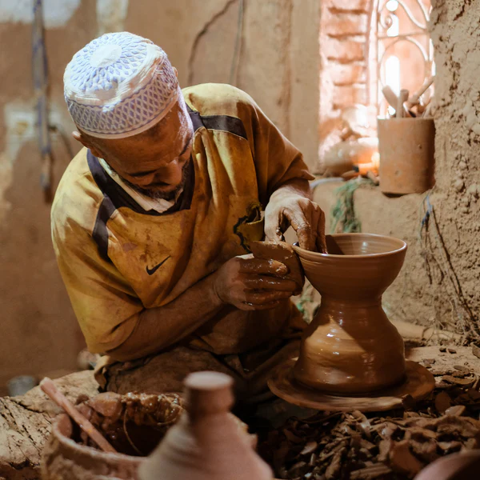

Fabrique à la main avec amour
Pour chaque matière naturelle, il existe une tradition marocaine de travail à la main pour l’enrichir d’un savoir-faire artisanal raffine.
Les artisans marocains mettent tout leur cœur et leur âme dans leur travail, souvent dans des ateliers familiaux où le savoir-faire artisanal et les motifs traditionnels se transmettent de generation en generation.
L’artisanat marocain fait ressortir le meilleur du savoir-faire des artisans
ainsi que les qualites des matières premières telles que la laine, le cuir, l’argile et le laiton. Cette utilisation de materiaux simples signifie egalement que leurs produits dureront et vieilliront avec grâce.
|

|